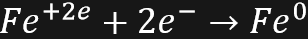
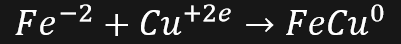

Balanceo de ecuaciones químicas
⊱ Química órganica ⊰
Ecuacion química:
Una ecuación química es la representación gráfica de una reacción química, demostrando las transformaciones que sufren las substancias bajo ciertas condiciones especificas, dando origen a los productos de la reacción. La ecuación química consta de dos miembros constituyentes ubicándose del lado izquierdo los reactivos mientras que del lado derecho se encuentran los productos de la reacción.
Fe + S -> FeS
Ley de la conservación de la materia:
La ley de la conservación de la materia o también conocida como la ley de Lavoisier es creada por el científico Mijaíl Vasílievich Lomonósov , más tarde fu descubierta y modificada por el científico Antoine-Laurent de Lavoisier , dicha ley esta propuesta de la siguiente manera:
“En un sistema aislado, durante toda la reacción química ordinaria, la masa total
en el sistema permanece constante, es decir la masa permanece constante,
entonces la masa consumida de los reactivos es igual a la masa de
los productos obtenidos”.
Dicho de otra manera:
“La masa no se crea ni se destruye solo se transforma”
Balanceo de ecuaciones químicas:
El balanceo de ecuaciones químicas consiste en equilibrar los reactivos y productos de las reacciones químicas , agregando coeficientes a un lado de los elementos o compuestos pertenecientes a la reacción química, buscando cumplir la ley de la conservación de la materia. Existen distintos métodos para el balanceo de ecuaciones químicas inorgánicas , encontrándose así:
1.- Método algebraico o aritmético.
2.- Método por tanteo.
3.- Método redox.
Método algebraico o aritmético:
Es un método matemático que consiste en asignar incógnitas a cada elemento de la ecuación química, estableciendo así ecuaciones en función de los átomos, al despejar dichas incógnitas obtendremos los distintos coeficientes buscado, el algoritmo para llevar a cabo dicho método es el siguiente:
1.- Escribir antes de cada molécula una letra, siguiendo el orden alfabético.
2.- Enlistar los átomos que participan en la reacción y se escribe el número de veces que aparece cada elemento en cada molécula identificada por letra.
3.- En caso de que un elemento se encuentre, más de una vez se sumarán y se escribe el total de veces que aparece el elemento en general.
4.- Se enlistan las letras que presentan las moléculas y se le asigna el valor de uno.
5.- Se resuelve el sistema de ecuaciones generado.
Ejemplo:
Siguiendo los pasos tenemos que:
1:
2:
2 - C - 2
1 - O - 2
2 - H - 4
3:
Para C -> 2A = 2D
Para H -> 2B = 2c + 2D
Para O -> B = 2c
A un valor cualquiera le asignamos 1 -> c = 1
4:
Resolvemos el sistema de ecuaciones:
A = c
2A = 2D -> A = D -> 1 = D
2B = 2c + 2D -> B = c + D -> B = 1 + 1 -> 2 = B
Sustituimos en la ecuación:
Comprobamos que este balanceada :
2 - C - 2
2 - O - 2
4 - H - 4
Método de tanteo:
Para llevar a cabo este método de balanceo, debemos primero contar los átomos con los que cuenta la reacción tanto los reactivos como los productos de la reacción, para llevar a cabo el balanceo de una forma más simple debemos ordenar el conteo de los elementos de la siguiente manera:
Metales
No metales
Oxígenos
Hidrogeno
Encontrándose entonces:
Conteo de los elementos:
2 - Fe – 1
3- O – 3
2 - H - 3
En los productos y en los reactivos debe de haber el mismo número de átomos, así que colocaremos un coeficiente para balancear la ecuación, en este caso colocamos un dos en el trióxido de hierro [Fe(OH)3] en los productos para balancear el hierro:
2 – Fe – 2
3 – O – 6
2 – H – 6
Una vez balanceado el hierro (Fe) se colocara un 3 a lado del agua para balancear el Oxigeno (O)
Corroboramos el conteo:
2 – Fe – 2
6 – O – 6
6 – H – 6
Método redox:
Se denomina reacción de óxido - reducción a toda reacción donde se trasfieren uno o más electrones entre los reactivos, provocando cambios en su sestado de oxidación , para que esto suceda debe haber un elemento que ceda electrones y otro que los acepte, donde
• El elemento que se oxida es el que cede los electrones llamándose
agente reductor , mientras que el elemento que recibe los electores se reduce
y se le denomina agente oxidante
El principio de electro – neutralidad o el principio de Pauling es un método utilizado para estimar la carga de moléculas o iones de la siguiente manera :
Estipula que dos partículas elementales (Fermiones) no pueden ocupar el mismo estado cuántico o “estado físico ” dentro de un mismo sistema al mismo tiempo, mientras que para los electrones estipula que es imposible que para 2 electrones en un mismo átomo tener los mismos 4 valores cuánticos.
Entedemos entonces que dentro de una reacción redox la carga se distribuye en un rango de [-1 , 1] , dentro de este proceso se realizan reacciones particulares , denominadas como semi-reacciones:
Por ejemplo :
Semireación 1 ( semireación de oxidación):

Semireacción 2 ( semireacción de reducción) :
En este caso el elemento cobre (Cu) trabaja con +2 e , entonces:
Al llevar acabo juntas las dos semireacciones tenemos que :
